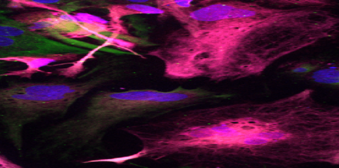
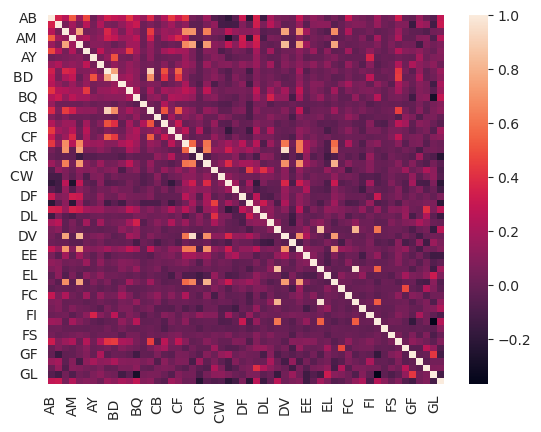
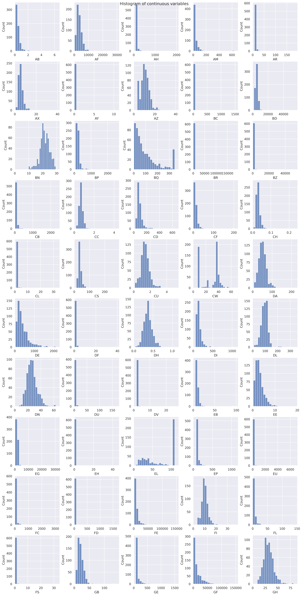
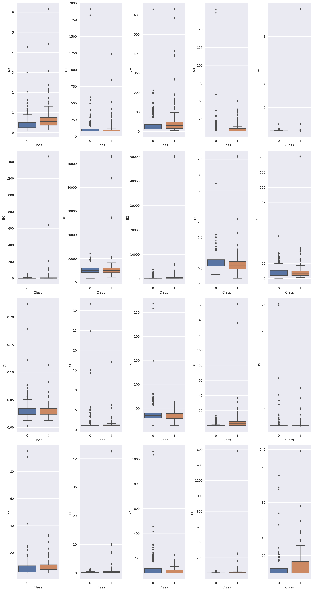

Code
import pandas as pd
import numpy as np
import matplotlib.pyplot as plt
import seaborn as sns
TRAIN_SET_FILE = "./data/train.csv"
INDEX_COLUMN = 'Id'
df_icr = pd.read_csv(TRAIN_SET_FILE, index_col = INDEX_COLUMN)
df_icr.shape(617, 57)This was the notebook that I used to submit my first competition in kaggle. The competition, hosted by ICR, focused on the identification of Age-Related conditions. Kaggle provided an example implementation using Tensorflow Decision Forests.

Goal of the Competition:
The aim of this competition is to develop a predictive model for three specific medical conditions. Participants are tasked with predicting whether an individual has one or more of these conditions (Class 1), or none of them (Class 0). The model should be trained using health measurement data.
Initially, we will proceed with loading the data. For this competition, a train.csv and a greeks.csv file are provided. The test set, available online via Kaggle, was utilized for competing on the public leaderboard.
Originally, this notebook was executed on Kaggle, hence the folder paths were set according to Kaggle’s server guidelines. These paths have since been adjusted to enable local execution of the code.
(617, 57)We see that we have a rather small dataset (617 rows) with a large number of columns (57). We can examine the initial rows of the training set to gain a preliminary understanding of the dataset.
| AB | AF | AH | AM | AR | AX | AY | AZ | BC | BD | ... | FL | FR | FS | GB | GE | GF | GH | GI | GL | Class | |
|---|---|---|---|---|---|---|---|---|---|---|---|---|---|---|---|---|---|---|---|---|---|
| Id | |||||||||||||||||||||
| 000ff2bfdfe9 | 0.209377 | 3109.03329 | 85.200147 | 22.394407 | 8.138688 | 0.699861 | 0.025578 | 9.812214 | 5.555634 | 4126.58731 | ... | 7.298162 | 1.73855 | 0.094822 | 11.339138 | 72.611063 | 2003.810319 | 22.136229 | 69.834944 | 0.120343 | 1 |
| 007255e47698 | 0.145282 | 978.76416 | 85.200147 | 36.968889 | 8.138688 | 3.632190 | 0.025578 | 13.517790 | 1.229900 | 5496.92824 | ... | 0.173229 | 0.49706 | 0.568932 | 9.292698 | 72.611063 | 27981.562750 | 29.135430 | 32.131996 | 21.978000 | 0 |
| 013f2bd269f5 | 0.470030 | 2635.10654 | 85.200147 | 32.360553 | 8.138688 | 6.732840 | 0.025578 | 12.824570 | 1.229900 | 5135.78024 | ... | 7.709560 | 0.97556 | 1.198821 | 37.077772 | 88.609437 | 13676.957810 | 28.022851 | 35.192676 | 0.196941 | 0 |
| 043ac50845d5 | 0.252107 | 3819.65177 | 120.201618 | 77.112203 | 8.138688 | 3.685344 | 0.025578 | 11.053708 | 1.229900 | 4169.67738 | ... | 6.122162 | 0.49706 | 0.284466 | 18.529584 | 82.416803 | 2094.262452 | 39.948656 | 90.493248 | 0.155829 | 0 |
| 044fb8a146ec | 0.380297 | 3733.04844 | 85.200147 | 14.103738 | 8.138688 | 3.942255 | 0.054810 | 3.396778 | 102.151980 | 5728.73412 | ... | 8.153058 | 48.50134 | 0.121914 | 16.408728 | 146.109943 | 8524.370502 | 45.381316 | 36.262628 | 0.096614 | 1 |
| 04517a3c90bd | 0.209377 | 2615.81430 | 85.200147 | 8.541526 | 8.138688 | 4.013127 | 0.025578 | 12.547282 | 1.229900 | 5237.54088 | ... | 0.173229 | 0.49706 | 1.164956 | 21.915512 | 72.611063 | 24177.595550 | 28.525186 | 82.527764 | 21.978000 | 0 |
| 049232ca8356 | 0.348249 | 1733.65412 | 85.200147 | 8.377385 | 15.312480 | 1.913544 | 0.025578 | 6.547778 | 1.229900 | 5710.46099 | ... | 4.408484 | 0.86130 | 0.467337 | 17.878444 | 192.453107 | 3332.467494 | 34.166222 | 100.086808 | 0.065096 | 0 |
| 057287f2da6d | 0.269199 | 966.45483 | 85.200147 | 21.174189 | 8.138688 | 4.987617 | 0.025578 | 9.408886 | 1.229900 | 5040.77914 | ... | 6.591896 | 0.49706 | 0.277693 | 18.445866 | 109.693986 | 21371.759850 | 35.208102 | 31.424696 | 0.092873 | 0 |
| 0594b00fb30a | 0.346113 | 3238.43674 | 85.200147 | 28.888816 | 8.138688 | 4.021986 | 0.025578 | 8.243016 | 3.626448 | 6569.37001 | ... | 4.762291 | 1.18262 | 0.067730 | 17.245908 | 147.218610 | 4589.611956 | 29.771721 | 54.675576 | 0.073416 | 0 |
| 05f2bc0155cd | 0.324748 | 5188.68207 | 85.200147 | 12.968687 | 8.138688 | 4.593392 | 0.025578 | 10.685041 | 1.229900 | 4951.69863 | ... | 0.173229 | 1.57151 | 0.318331 | 24.515421 | 98.929757 | 5563.130949 | 21.994831 | 33.300970 | 21.978000 | 0 |
10 rows × 57 columns
We can see from the table that there are several columns, each representing a distinct measured feature. These features however are obfuscated, making it really difficult and sometimes impossible to determine which column corresponds to which actual measurement. Additionally, it’s noticeable that the values for each feature span various ranges.
As stated in the competition goal, our task is to utilize the information from these features to predict whether a patient has any of the three age-related conditions (Class 1) or none of these conditions (Class 0).
Looking at the features from the train data, their mean and standard deviation appear to be very different in terms of range. Therefore, a good approach for using the different models later on will be to standardize or normalize all variables. Models work better with scaled variables as the optimization becomes more stable numerically. In fact, we might try both methods to see if they work.
There are nan values in the following columns: BQ 60
CB 2
CC 3
DU 1
EL 60
FC 1
FL 1
FS 2
GL 1
dtype: int64We can see that there are 9 columns containing null values, from which only BQ and EL are the ones with most nan values (~10% of those).
We will transform the data by using a pipeline in which we will input the average value and then we will scale all the values between 0 and 1. By writing the pipeline, we should be able to apply the same for the test set.
We should also plot the correlation between variables, since many age related conditions might present similar features. In addition, we should plot the features as boxplots to check for outliers.
Lastly, we need to check for the class output, to check if the dataset is imbalanced or not. .
In this section, we will be conducting a visual exploration of data distributions, correlations and potential trends. We will also investigate whether there is an imbalance in the classification class and quantify the number of missing values present in the dataset.
Let’s examine whether the target variable Class is balanced or not:
Observing the data, we notice an imbalance with a ratio of 1:5. In the context of medical conditions, this is typical, as there are usually more individuals without the condition than those affected. It’s important to consider this during model training—whether to penalize incorrect predictions or explore the impact of balanced training data on performance.
In addition, there are some variables that have null-values. We need to check how are those null-values for tsome variables to decide whether imputation of dropping entirely rows or columns is a better approach. In the next cell, we will identify null-values per feature.
There are nan values in the following columns: BQ 60
CB 2
CC 3
DU 1
EL 60
FC 1
FL 1
FS 2
GL 1
dtype: int64We can see that there are 9 columns containing null values, from which only BQ and EL are the ones with most nan values (~10% of those).
We will transform the data by using a pipeline in which we will input the average value and then we will scale all the values between 0 and 1. By writing the pipeline, we should be able to apply the same for the test set.
We should also plot the correlation between variables, since many age related conditions might present similar features. In addition, we should plot the features as boxplots to check for outliers.
Lastly, we need to check for the class output, to check if the dataset is imbalanced or not.
['AB' 'AF' 'AH' 'AM' 'AR' 'AX' 'AY' 'AZ' 'BC' 'BD ' 'BN' 'BP' 'BQ' 'BR'
'BZ' 'CB' 'CC' 'CD ' 'CF' 'CH' 'CL' 'CR' 'CS' 'CU' 'CW ' 'DA' 'DE' 'DF'
'DH' 'DI' 'DL' 'DN' 'DU' 'DV' 'DY' 'EB' 'EE' 'EG' 'EH' 'EJ' 'EL' 'EP'
'EU' 'FC' 'FD ' 'FE' 'FI' 'FL' 'FR' 'FS' 'GB' 'GE' 'GF' 'GH' 'GI' 'GL']Now it is time to explore how the features are distributed. We can do so through the following visualizations:
# Define correlation threshold
corr_threshold = 0
# Identify correlation in data
correlation_features = df_icr.corr()
correlation_signal = correlation_features[np.abs(correlation_features) > corr_threshold]
correlation_signal = correlation_signal.fillna(0)
low_correlation_columns = correlation_signal.index[correlation_signal.sum(axis= 1) == 1]
sns.heatmap(correlation_features[np.abs(correlation_features) > corr_threshold])/tmp/ipykernel_49989/298676056.py:5: FutureWarning: The default value of numeric_only in DataFrame.corr is deprecated. In a future version, it will default to False. Select only valid columns or specify the value of numeric_only to silence this warning.
correlation_features = df_icr.corr()<Axes: >
Index(['AB', 'AF', 'AH', 'AM', 'AR', 'AX', 'AY', 'AZ', 'BC', 'BD ', 'BN', 'BP',
'BQ', 'BR', 'BZ', 'CB', 'CC', 'CD ', 'CF', 'CH', 'CL', 'CS', 'CU',
'CW ', 'DA', 'DE', 'DF', 'DH', 'DI', 'DL', 'DN', 'DU', 'DV', 'EB', 'EE',
'EG', 'EH', 'EL', 'EP', 'EU', 'FC', 'FD ', 'FE', 'FI', 'FL', 'FS', 'GB',
'GE', 'GF', 'GH', 'GI', 'GL', 'Class'],
dtype='object')53To get an initial understanding of the features of the dataset, we can start by visualizing the distribution of the features. We can do so by running a histogram of all the numerical variables to see whether variables ar econtinuous or discrete. We will select 20 bins for the histograms.
NUM_PLOT_COLUMNS = 5
USE_HISTOGRAM = True
plt.figure().clear()
fig, axes = plt.subplots(int(num_signal_columns/NUM_PLOT_COLUMNS), NUM_PLOT_COLUMNS, figsize=(15, 30), sharey=False)
fig.suptitle('Distibution of continuous variables')
fig.tight_layout()
idrow = -1
for idx, col in enumerate(signal_correlation_columns):
idcol = int(np.mod(idx, NUM_PLOT_COLUMNS))
idrow = idrow + 1 if idcol == 0 else idrow
if USE_HISTOGRAM:
sns.histplot(ax=axes[idrow, idcol], data = df_icr, x = col, bins = 20)
else:
sns.boxplot(ax=axes[idrow, idcol], data = df_icr, x = col)
axes[idrow, idcol].set_xlim(0, np.max(df_icr[col]) * 1.1)IndexError: index 10 is out of bounds for axis 0 with size 10<Figure size 1920x1440 with 0 Axes>
As we can see, we have some outliers on some variables, and others appear to be discrete rather than continuous. We are going to define which of those are numerical initially before doing any extra modification on the data.
Letś first chekck for outliers doing a boxplot

# continuous_features = ['AF', ]
# discrete_features = ['AB', 'AH', 'AM', 'BZ', 'EU', 'GL']
# # num_plot_columns = 3
# # plt.figure().clear()
# # fig, axes = plt.subplots(int(len(discrete_features)/num_plot_columns),
# # num_plot_columns, figsize=(15, 5), sharey=True)
# # fig.suptitle('Histogram of discrete variables')
# # fig.tight_layout() # Or equivalently, "plt.tight_layout()"
# # idrow = -1
# # for idx, col in enumerate(discrete_features):
# # idcol = int(np.mod(idx, num_plot_columns))
# # if idcol == 0:
# # idrow += 1
# # sns.histplot(ax=axes[idrow, idcol], data = df_icr, x = col, bins = 20)
# # # sns.countplot(ax=axes[idrow, idcol], data = df_icr, x = col)
# # # axes[idrow, idcol].set_title(col)
# fig, ax = plt.figure()
# sns.histplot(data = df_icr, x = col, bins = 50)
# ax.set_xlim(0, 5)We are going to use a scikit-learn Pipeline to structure our preprocessing. The reason to use a Pipeline is because we will need to conduct the same transformations conducted in the train set into the test set. By storing them in a Pipeline, it is easier to retrieve the transformation when the test set is provided. In the context of machine learning in production, it is saved to conduct the same transformations when new data arrives.
The preprocessing is going to follow these steps:
KNNImputer. The reason for using KNNimputer is to avoid changing the underlying distribution of the feature. Alternative imputation methods involve using the mean for the values imputed, but that decreases the variance of the feature and might distort the relationship between variables.MixMaxScaler. This should help the model to converge faster and potentially offering better results.from sklearn.preprocessing import StandardScaler, MinMaxScaler, LabelEncoder, OrdinalEncoder, OneHotEncoder
from sklearn.impute import SimpleImputer, KNNImputer
from sklearn.pipeline import Pipeline
from sklearn.compose import ColumnTransformer
from sklearn import set_config
set_config(transform_output = "pandas")
numerical_features = features[X_train.dtypes == "float"]
categorical_features = features[X_train.dtypes == "object"]
numeric_transformer = Pipeline(steps=[
('imputer', KNNImputer()),
('scaler', MinMaxScaler()),
])
categorical_transformer = Pipeline(steps=[
('categorizer', OrdinalEncoder()),
])
preprocessor = ColumnTransformer(transformers=[
('num', numeric_transformer, numerical_features),
('cat', categorical_transformer, categorical_features),
])
data_pipeline = Pipeline(steps=[('preprocessor', preprocessor)])
X_train_transformed = data_pipeline.fit_transform(X_train)
X_train_transformedTypeError: set_config() got an unexpected keyword argument 'transform_output'The preprocessing has been conducted in the train set. We should check that the missing values have been addressed. We do this in the next cell.
We should also examine that the scaling has worked properly by taking al ook at the first rows of the X_train_transformed variable
Check the balance of the records to make sure that the evaluation of the ML model takes the weights into account
Since we only have a train set and we do not really have a test set, we need to ‘create’ an evaluation set for the data we are going to be training.
In addition, we need to ensure that the train and validation sets are split correctly regargding the output variable. Otherwise, we could end up in a Class distribution of 7:1 ratio for the train set and 3:2 for the validation set. This would cause most likely overfitting as the model could predict well the train set but not well on the validation set.
# Leave an out of fold sample
from sklearn.model_selection import train_test_split
seed = 42
validation_size = 0.15
X_train, X_validation, y_train, y_validation = train_test_split(X_train_transformed, y_train,
test_size = validation_size,
random_state = seed, stratify=y_train)
ec1_eval_set = [(X_train, y_train), (X_validation, y_validation)]correlation_features_transformed = X_train_transformed.corr()
correlation_features_transformed[np.abs(correlation_features_transformed) > 0.3].sum()
# sns.heatmap(correlation_features_transformed[np.abs(correlation_features_transformed) > 0.3])
sns.heatmap(correlation_features[np.abs(correlation_features) > 0.3])Until now, we have conducted data exploration, preprocessed adequately by scaling and imputing missing values, and split them in a way that the class distribution is preserved between sets.
After all these steps, we can build our first machine learning models.
The performance of the model will be measured using balanced_log_loss, which is defined in the next cell. This type of loss function takes into account the imbalance of the data and penalizes the wrong predictions for class 1.
We will try to fit certain algorithms and eventually we will use an ensemble model.
from sklearn.metrics import accuracy_score, roc_auc_score, recall_score, f1_score, confusion_matrix, log_loss, make_scorer
from sklearn.linear_model import LogisticRegression
from sklearn.ensemble import RandomForestClassifier
from sklearn.model_selection import RandomizedSearchCV, GridSearchCV
from sklearn.svm import SVC
import xgboost as xgb
# Use balanced log loss as metric
def balanced_log_loss(y_true, y_pred):
nc = np.bincount(y_true)
return log_loss(y_true, y_pred, sample_weight = 1/nc[y_true], eps=1e-15)params = {
# 'base_score' : [0.50, 0.60, 0.70, 0.75, 0.80, 0.85, 0.90, 0.95],
# "learning_rate" : [0.05, 0.10, 0.15, 0.20, 0.25, 0.30],
"n_estimators" : [100, 200, 300, 400, 500, 600, 800, 1000],
"max_depth" : [3, 4, 5, 6, 8, 10, 12, 15],
# 'min_samples_split': [0.10, 0.12, 0.15, 0.17, 0.20, 0.22, 0.25]
# "min_child_weight" : [1, 3, 5, 7],
# "gamma" : [ 0.0, 0.1, 0.2, 0.3, 0.4],
# "colsample_bytree" : [ 0.3, 0.4, 0.5, 0.7],
}
classifier = xgb.XGBClassifier(random_state = seed, scale_pos_weight = positive_weight)
random_search = RandomizedSearchCV(classifier, param_distributions=params, n_iter = 5, scoring = make_scorer(balanced_log_loss, greater_is_better=True),
n_jobs = -1, cv = 5, verbose = 3)
random_search.fit(X_train, y_train)from sklearn.model_selection import KFold, StratifiedKFold, cross_validate, cross_val_score
xgb_clf = random_search.best_estimator_
xgb_score = cross_val_score(xgb_clf, X_train, y_train, cv = 5, groups = y_train, scoring = make_scorer(balanced_log_loss, greater_is_better=True))
print(f"Score from cross_val_score is: {list(map('{:.2f}'.format,xgb_score))}")
np.mean(xgb_score)
Check that the results of the out of fold are consistent with the cross-validation scores
Some people during the Kaggle competition reported the successful use of lightgbm and catboost. We will use them in the next cells
import lightgbm as lgb
import optuna
# import shap
lgbm_clf = lgb.LGBMClassifier(n_estimators=150,
learning_rate=0.1,
num_leaves=10,
max_depth=4,
subsample = 0.9,
colsample_bytree = 0.3,
subsample_freq = 3,
min_split_gain = 0.1,
min_child_weight = 0.0005,
min_child_samples = 20,
reg_lambda = 0.01,
reg_alpha = 0.1,
objective = 'binary',
class_weight = 'balanced',
random_state=seed)
lgbm_clf.fit(X_train, y_train)
score_lgbm = cross_val_score(lgbm_clf, X_train, y_train, cv=5, n_jobs=-1,
scoring = make_scorer(balanced_log_loss, greater_is_better=True))
score_lgbm
from catboost import CatBoostClassifier
catboost_clf = CatBoostClassifier(
iterations = 250,
learning_rate = 0.04525759098022261,
depth = 7, # depth above 10 usually introduces overfitting
l2_leaf_reg = 7.82,
early_stopping_rounds = 3,
auto_class_weights = 'Balanced',
loss_function = 'Logloss',
verbose = 0,
)
catboost_clf.fit(X_train, y_train)
score_catboost = cross_val_score(catboost_clf, X_train, y_train, cv=5, n_jobs=-1,
scoring = make_scorer(balanced_log_loss, greater_is_better=True))
score_catboost
# best_hyperparams_cat = {'iterations': 245, 'learning_rate': 0.04525759098022261, 'depth': 7, 'l2_leaf_reg': 7.822788431713332, 'early_stopping_rounds': 3}rf_clf = RandomForestClassifier(n_estimators = 100, random_state = seed,
criterion= 'log_loss',
max_depth=7, class_weight= 'balanced')
rf_clf.fit(X_train, y_train)
score_rf = cross_val_score(rf_clf, X_train, y_train, cv=5, n_jobs=-1,
scoring = make_scorer(balanced_log_loss, greater_is_better=True))
score_rffrom sklearn.ensemble import StackingClassifier
estimators = [
('LogisticRegression', LogisticRegression(max_iter=10000)), #doesn't converge
('RandomForestClassifier', rf_clf),
('CatBoostClassifier', catboost_clf),
('XGBClassifier', xgb_clf),
# ('LGBMClassifier', lgbm_clf)
]
stacked_clf = StackingClassifier(estimators=estimators,
final_estimator=lgbm_clf
)
stacked_clf.fit(X_train, y_train)
stacked_score = cross_val_score(stacked_clf, X_train, y_train, cv=5, n_jobs=-1,
scoring = make_scorer(balanced_log_loss, greater_is_better=True))Letś plot the importance of the tree model and the tree itself
Once we have classified our train model, we will classify our test data.
Here is when we have to use again the same pipeline used in the train set to transform the data on the test set.